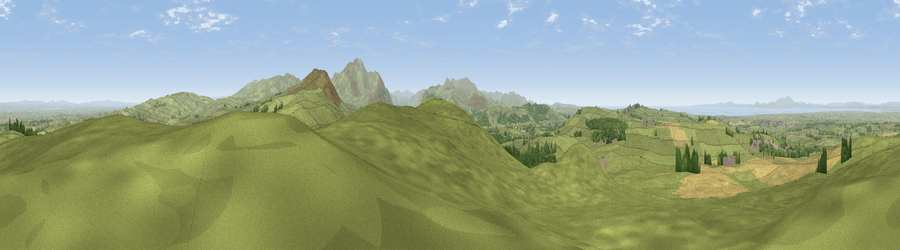

Caer Mot
#2643 in England · top 24% of its area beats it · near BothelThe view, rendered

A 360° render of this exact spot computed from the terrain model, tree cover and land cover — summer colours, afternoon light, calibrated against photographs of famous viewpoints. Real trees, hedges and buildings will differ in detail.
The panorama
Grey silhouette: terrain skyline in each direction (720 bearings, Earth curvature and refraction included). Dashed green: skyline with trees (+15 m) and buildings (+8 m) as obstacles. Blue strip: how far the ground is visible on each bearing.
Where the view opens
Wedge length = distance to the farthest visible ground on that bearing (vegetation-aware). Rings at 10, 25 and 50 km.
What fills the view
82% grassland · 9% cropland · 6% woodland · 2% water ·
Angular shares of the visible panorama (visual magnitude), not map area. Landscape diversity 0.30 (0–1 Shannon).
Key numbers
More beautiful places nearby
The staircase of upgrades: each row has a higher view potential than everything closer. Driving times are estimates from straight-line distance, calibrated against real road routing — check an actual route before setting out.
| Place | Direction | Drive | Score |
|---|---|---|---|
| Caer Mote | S · 0 km | ~1 min | 75.6 |
| Viewpoint near Bewaldeth | SE · 2 km | ~6 min | 78.0 |
| Binsey | SE · 4 km | ~8 min | 80.5 |
| Viewpoint near Embleton | S · 8 km | ~16 min | 84.6 |
| Viewpoint near Bassenthwaite | SSE · 10 km | ~19 min | 85.3 |
| Ullock Pike | SSE · 10 km | ~20 min | 89.4 |
| Long Side | SSE · 11 km | ~20 min | 89.5 |
| Viewpoint near Finsthwaite | SSE · 53 km | ~74 min | 90.3 |
54.72763, -3.25039 · source: osm peak · position refined by local search. Computed location — check access rights before visiting.